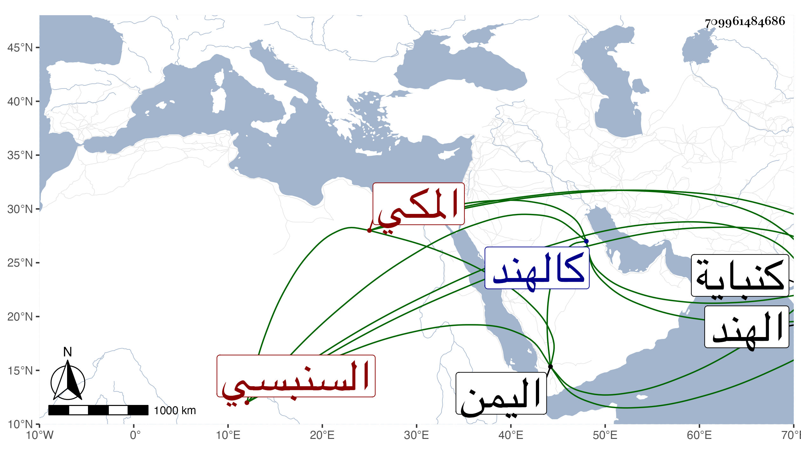

0902Sakhawi.DawLamic.ITO20230111-ara1.EIS1600.709961484686
Biography ID: 709961484686
885
عبد اللطيف بن أحمد بن جار الله بن زائد السنبسي المكي . والد عبد العزيز الماضي . قرأ على الزين بن أبي بكر المراغي المسلسل والختم من الصحيحين . ممن سافر في التجارة لبلاد كالهند واليمن . ومات في شوال سنة أربع وستين بفوقة من أعمال كنباية من الهند .
